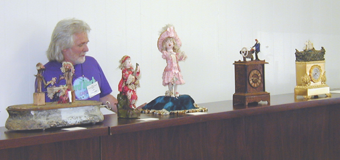
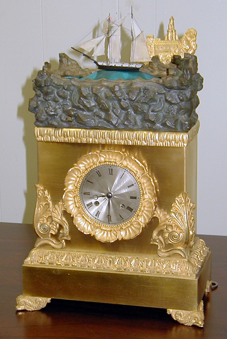
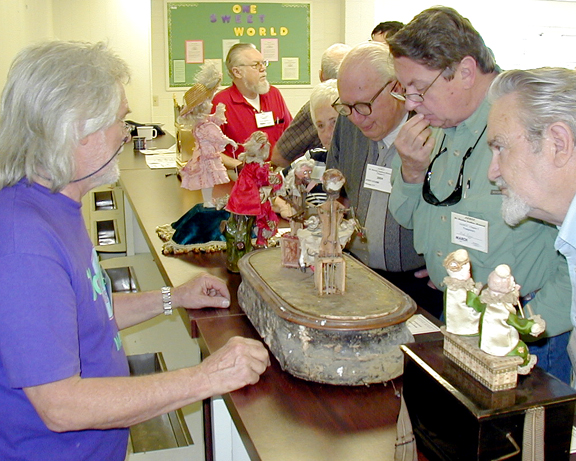

Clockwork Automatons, Old and New
This is an archived report. Meeting places, times and people have changed since it was written. See Meetings for current details.
Our March 14th meeting was held as usual at the Boys & Girls Club. Under clear skies and a warm day, approximately 250 members and quests made for a very large MART. All 65 tables were occupied with sellers or silent auction items.

The Chapter is offering a new feature for our membership, the ability to list those members featuring services on our chapter WEB Site. Application forms for those wishing to be listed were made available.

Members Donald Day, Chapter Treasurer and Walter Loeliger, from Carmel Valley, were our speakers for the day on “automata” or “clockwork automatons”. Don spoke on history and background and Walter displayed five examples of the craft, one made in Germany and the other four were from France. Four were clothed and one was without clothing, allowing all to see the action of the pair of figures.

Members Fred Busch and Peter Mikkelsen each displayed clocks with Automation on their tops, one with a worker sharpening a blade and the other with a sailing ship ridding the waves.